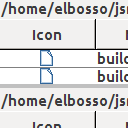
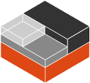
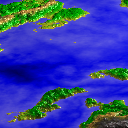
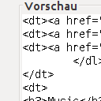

Java
Hauptsächlich Desktop Themen und Java SE
GroupedJTable
05.09.2013

Vorgestellt wird eine neue Java-Komponente, die eine normale JTable übersichtlicher machen soll, indem sie eine lange Tabelle in mehrere untereinanderstehende aufteilt. Der Clou dabei: die Spalten sind trotzdem miteinander verbunden...
Portierung einer Java-Bibliothek nach Android
Tile-Identifizierung für Tracks
01.09.2013
Ich wollte das Problem lösen, für einen vorgefertigten Track alle benötigten Tiles von einem Kartenserver zu ziehen, so daß danach eine offline-Navigation möglich wird.
Nachdem ich kürzlich mit der Entwicklung meiner ersten Android-Anwendung nur einen kleinen Zeh ins kalte Wasser gesteckt habe, gewinnt mein erstes "richtiges" Projekt langsam aber sicher an Konturen
Java3D Bug in großen TriangleStrips
17.07.2013

Nachdem ich ein wenig mit meinem Landschaftsgenerator und der neuen Visualisierung herumgespielt hatte, bemerkte ich, daß dabei Artefakte auftraten - und zwar ausschließlich unter Windows. Dem muß man auf den Grund gehen...
EBMap4D Bitmap-Layer
11.07.2013

Die Geo-Anwendung EBGeo4D wurde um einige Features erweitert: es existiert jetzt die Möglichkeit, nicht mehr wie früher Layer an- und abzuschalten, sondern man kann ihre Deckkraft stufenlos einstellen. Außerdem beherrscht die Anwendung jetzt den Umgang mit Bitmap-Layern.
Tile-Server für Openstreetmap
26.06.2013

Hier ein kleiner Überblick darüber, welche Ressourcen mir bei meinen Übungen zum Thema Geo-Informatik und Openstreetmap geholfen haben. Zum Testen der Implementierungen rund um dieses Themengebiet - unter anderem EBMap4D benötigte ich eine eigene Quelle für das Kartenmaterial.
DayLight
23.06.2013

Manche Komponenten entwickle ich auch einfach mal als Fingerübung oder "because I can". Diese hier entstand, weil ich mich gerade mit der Komponente zur Eingabe eines numerischen Tripels befaßt habe, als ich im Internet über eine Uhr mit einem interessanten Ziffernblatt stolperte.
FbmLandscapes + Java3D
20.06.2013

Nachdem ich meinen Landschaftsgenerator abgeschlossen hatte, hat mich das Ergebnis der Vorschau nicht zufrieden gestellt. Jedes Mal PovRay zu starten, nur um eine 3D-Ansicht zu sehen war einfach zu unbefriedigend. Zeit, sich einmal mit Java3D zu beschäftigen...
Ein kleines Stück MUI in Java
11.06.2013

Ich stelle hier zwei Komponenten vor, die ihren Zweck gemeinsam haben: Sie sollen andere Komponenten in sich aufzunehmen und dem Anwender ermöglichen, die Größe dieser Komponenten einzustellen.
Ältere Artikel
Hier geht es zum Archiv der Artikel, die vor dem 08.06.2013 verfasst wurden:
- EBMap4D
- TPEdit
- ...


Vor 5 Jahren hier im Blog
-
Julia-Mengen mit Shadern umgesetzt
11.08.2019
Nachdem ich begonnen hatte, mich anlässlich der neu erwachten Leidenschaft für das Mandelbrot-Fraktal mit Shaderprogrammierung zu befassen, habe ich ein weiteres verwandtes System in Angriff genommen:
Weiterlesen...
Tags
Android Basteln C und C++ Chaos Datenbanken Docker dWb+ ESP Wifi Garten Geo Git(lab|hub) Go GUI Gui Hardware Java Jupyter Komponenten Links Linux Markdown Markup Music Numerik PKI-X.509-CA Python QBrowser Rants Raspi Revisited Security Software-Test sQLshell TeleGrafana Verschiedenes Video Virtualisierung Windows Upcoming...
Manche nennen es Blog, manche Web-Seite - ich schreibe hier hin und wieder über meine Erlebnisse, Rückschläge und Erleuchtungen bei meinen Hobbies.
Wer daran teilhaben und eventuell sogar davon profitieren möchte, muß damit leben, daß ich hin und wieder kleine Ausflüge in Bereiche mache, die nichts mit IT, Administration oder Softwareentwicklung zu tun haben.
Ich wünsche allen Lesern viel Spaß und hin und wieder einen kleinen AHA!-Effekt...
PS: Meine öffentlichen GitHub-Repositories findet man hier - meine öffentlichen GitLab-Repositories finden sich dagegen hier.